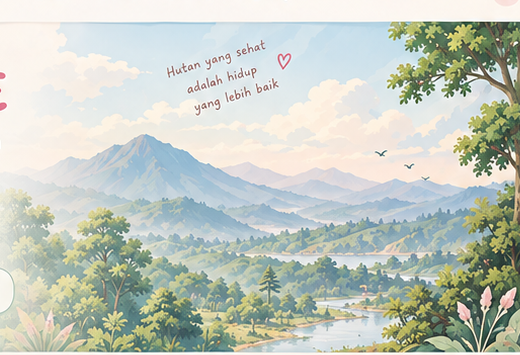

— titik pada data yang tersedia.
🌿 APLIKASI PEMANTAUAN & MITIGASI KARHUTLA
Pemantauan dan Mitigasi
NATURA-SAFE
Pemantauan dan Mitigasi
Kebakaran Hutan dan Lahan
NATURA-SAFE menghubungkan informasi hotspot, kondisi lingkungan, dan edukasi mitigasi untuk membantu pengguna memahami risiko kebakaran hutan dan lahan.
🌳 Kenali alam · pahami risiko · jaga masa depan

Video pengantar: hutan, hotspot, risiko, dan tindakan aman
🌳
Dari Hutan hingga Pemulihan
Gambaran singkat perjalanan sebuah risiko karhutla.
→
→
→
→
✨ EKSPLORASI NATURA-SAFE
Semua ada di sini, pilih yang ingin kamu jelajahi.
Beranda hanya memberi sedikit gambaran. Klik setiap kartu untuk masuk ke fitur lengkapnya.
🌿 MULAI DARI SINI
Kenali karhutla. Pahami risikonya.
Jelajahi data, lihat peta, lalu coba simulasi untuk memahami keputusan yang aman.
—Titik Hotspot
—Provinsi Terdata
DATAEksplorasi Interaktif
📊 DATA NATURA-SAFE
Data yang Digunakan
Data NATURA-SAFE dipisahkan berdasarkan fungsinya: hotspot sebagai indikasi, kondisi lingkungan sebagai konteks, dan kejadian kebakaran sebagai catatan peristiwa.
— provinsi terdata.
Suhu, kelembapan, hujan, dan angin dari sumber resmi.
Catatan kebakaran/karhutla yang memiliki sumber pendukung.
Riwayat luas karhutla menurut provinsi
Memuat rekap riwayat karhutla…
🟠 Hotspot bukan otomatis kebakaran
Hotspot digunakan sebagai indikasi awal yang perlu diperhatikan. Kejadian kebakaran atau karhutla ditampilkan terpisah apabila terdapat data/laporan yang mendukung.
🌦️ DATA LINGKUNGAN RESMI
Prakiraan Cuaca BMKG
Ambil data suhu, kelembapan, kondisi cuaca, dan angin dari API Data Terbuka BMKG berdasarkan kode wilayah desa/kelurahan tingkat IV.
ℹ️ Masukkan kode ADM4 untuk mengambil data prakiraan resmi BMKG.
Kalimantan Tengah
📍 Palangkaraya
Suhu: 34°C
Kelembapan: 45%
Angin: 22 km/j
Cuaca: Cerah
⚠️ STATUS: RISIKO TINGGI
Riau
📍 Pekanbaru
Suhu: 32°C
Kelembapan: 55%
Angin: 18 km/j
Cuaca: Cerah Berawan
⚠️ STATUS: WASPADA SIAGA
Jawa Timur
📍 Surabaya
Suhu: 33°C
Kelembapan: 52%
Angin: 14 km/j
Cuaca: Cerah Berawan
⚠️ STATUS: WASPADA SIAGA
Sumber: BMKG Data Terbuka. Data prakiraan tersedia 3 hari dan diperbarui 2 kali sehari. NATURA-SAFE tidak mengubah data BMKG.
🔄 Pembaruan Data
Hotspot diperbarui melalui workflow GitHub Actions setelah repository diunggah dan Actions aktif. Pembaruan tidak berlangsung secara langsung setiap detik; waktu pembaruan terakhir ditampilkan di bawah. Status: memeriksa metadata…
🌿 DATA • NATURA-SAFE • KARHUTLA
Kenali NATURA-SAFE & Karhutla
Kenali tujuan NATURA-SAFE, pahami apa itu karhutla, faktor yang memengaruhi penyebaran api, dampaknya, serta cara bersikap aman saat terjadi kebakaran.
Apa itu Karhutla?
Karhutla adalah kebakaran yang terjadi pada kawasan hutan dan/atau lahan. Kebakaran dapat menyebabkan kerusakan vegetasi, habitat satwa, kualitas udara, serta ekosistem di sekitarnya.
🔥 Apa yang Bisa Menyebabkan Karhutla?
🌾
Aktivitas Manusia
Kebakaran dapat berkaitan dengan aktivitas manusia, misalnya pembukaan atau pengelolaan lahan dengan menggunakan api serta pembakaran terbuka.
⚡
Faktor Alam
Dalam kondisi tertentu, sumber api juga dapat berasal dari faktor alam, misalnya sambaran petir.
🌬️
Kenapa Api Bisa Menyebar?
Penyebaran api dipengaruhi oleh kondisi lingkungan. Vegetasi yang kering dapat menjadi bahan bakar, sedangkan kondisi udara yang panas dan kering serta angin dapat membantu api menyebar lebih cepat.
Suhu tinggi dapat meningkatkan kondisi kering.
Kelembapan rendah membuat vegetasi lebih mudah kering.
Bahan bakar kering dapat membantu api menyebar.
Angin dapat memengaruhi arah dan kecepatan penyebaran api.
🐾 Apa Dampaknya?
🌳
Ekosistem
Kebakaran dapat merusak vegetasi dan mengubah kondisi ekosistem.
🐾
Satwa
Habitat satwa dapat terganggu atau kehilangan sumber makanan dan tempat berlindung.
🌫️
Udara
Asap kebakaran dapat menurunkan kualitas udara dan mengganggu aktivitas masyarakat.
🧯
Bagaimana Cara Mencegahnya?
- Hindari pembakaran terbuka yang tidak terkendali.
- Jangan meninggalkan sumber api di area yang mudah terbakar.
- Perhatikan kondisi lahan ketika vegetasi sedang kering.
- Laporkan indikasi kebakaran kepada pihak yang berwenang.
- Ikuti informasi dan peringatan resmi dari instansi terkait.
🗺️ PETA INDONESIA
Hotspot & Kondisi Lingkungan
Klik titik untuk melihat indikasi hotspot. Jika tersedia, kejadian kebakaran/karhutla akan ditampilkan sebagai data terpisah. Hotspot diperbarui dari file data yang tersedia. Pin kejadian karhutla hanya akan muncul jika ada catatan kejadian dengan koordinat dan sumber spesifik; rekap provinsi tidak diperlakukan sebagai lokasi kejadian.
Catatan: lapisan hotspot menunjukkan deteksi panas satelit. Tidak ada pin riwayat kejadian karhutla kecuali data kejadian berkoordinat dan bersumber spesifik telah ditambahkan. Hotspot: sumber SiPongi. Peta utama menggunakan citra satelit agar lokasi hotspot terlihat lebih realistis. Sumber hotspot: SiPongi Kementerian Kehutanan. Gunung tersedia melalui tombol katalog di pojok kanan bawah.
📊 ANALISIS RISIKO
Dari Data Menjadi Pemahaman
Pahami bagaimana hotspot dan kondisi lingkungan dapat dibaca bersama untuk membangun gambaran risiko.
Hotspot
Titik panas yang terdeteksi satelit menjadi salah satu informasi awal.
Suhu
Suhu lebih tinggi dapat membuat vegetasi lebih cepat mengering.
Kelembapan
Kelembapan rendah dapat membuat bahan vegetasi lebih mudah terbakar.
Angin
Angin dapat membantu penyebaran api ke area sekitar.
🌿 Alur Analisis
🔥 Hotspot→🌡️ Suhu→💧 Kelembapan→🌧️ Curah Hujan→💨 Angin
📡 Status Data Lingkungan
Data hotspot dari SiPongi digunakan dalam peta. Data cuaca historis tidak dibuat-buat; integrasi data lingkungan resmi dapat ditambahkan pada tahap berikutnya.
Data hotspot dari SiPongi digunakan dalam peta. Data cuaca historis tidak dibuat-buat; integrasi data lingkungan resmi dapat ditambahkan pada tahap berikutnya.
🐾 DATA SATWA TERDAMPAK
Satwa dan Dampak Karhutla
Bagian ini mencatat satwa yang benar-benar memiliki dokumentasi terdampak karhutla, bukan sekadar daftar satwa yang hidup di suatu wilayah.
📍
Berbasis Kejadian
Satwa dikaitkan dengan lokasi dan kejadian karhutla yang memiliki sumber.
🐾
Data Terdokumentasi
Jumlah, kondisi, penyelamatan, atau kematian hanya ditampilkan jika tersedia.
📚
Sumber Jelas
Informasi satwa dilengkapi sumber agar dapat ditelusuri kembali.
🐾 REKAP SATWA
Semua Hewan Terdampak
Satwa hanya ditampilkan setelah dikaitkan dengan kejadian karhutla tertentu dan sumber laporan yang mendukung.
— satwa
📚 PEMBELAJARAN
Kenali Kebakaran dari Data
Materi singkat untuk memahami kebakaran, hotspot, karhutla, faktor lingkungan, dampak, dan pencegahan.
🟠
Apa itu Hotspot?
Hotspot adalah indikasi panas yang terdeteksi oleh sistem pengamatan satelit. Hotspot tidak otomatis berarti telah terjadi kebakaran.
🔥
Apa itu Kebakaran?
Kebakaran adalah peristiwa terbakarnya material secara tidak terkendali. Jenis dan lokasi kejadian dapat berbeda-beda.
🌳
Apa itu Karhutla?
Karhutla adalah kebakaran yang terjadi pada kawasan hutan dan/atau lahan.
🌦️
Kenapa Data Lingkungan Penting?
Suhu, kelembapan, hujan, angin, dan kondisi vegetasi membantu memberikan konteks terhadap kondisi suatu wilayah.
🎮 SIMULASI PENGHENTIAN & PENYELAMATAN
Kalau Karhutla Terjadi, Apa yang Kamu Lakukan?
Simulasi ini melatih pengambilan keputusan yang aman: mengenali bahaya, melapor, menjauh, membantu proses penyelamatan, dan mengikuti arahan petugas.
Video simulasi pengambilan keputusan
Video ini contoh edukasi singkat. Ikuti prosedur resmi dan jangan mendekati lokasi kebakaran.
❓
Sudah selesai simulasi?
Lanjutkan dengan mini quiz untuk menguji pemahamanmu.
🌿 MITIGASI KARHUTLA
Pusat Mitigasi Kebakaran Hutan dan Lahan
Langkah pencegahan, pemantauan, penanganan, dan pemulihan lingkungan berdasarkan kondisi risiko karhutla.
🌳
1. Pencegahan
- Tidak membuka lahan dengan cara membakar.
- Tidak membuang puntung rokok sembarangan.
- Menjaga lahan dan vegetasi dari sumber api.
- Mengikuti informasi cuaca dan peringatan risiko.
📡
2. Pemantauan
- Memantau titik panas (hotspot).
- Memeriksa suhu, kelembapan, curah hujan, dan angin.
- Memperhatikan perubahan tingkat risiko lingkungan.
- Memverifikasi informasi melalui sumber resmi.
⚠️
3. Penanganan Awal
- Memastikan informasi kejadian kepada petugas.
- Melaporkan lokasi dan waktu indikasi kebakaran.
- Memberikan peringatan kepada masyarakat melalui jalur resmi.
- Mengutamakan keselamatan dan mengikuti arahan petugas.
🚒
4. Penanggulangan
- Penanganan dilakukan oleh petugas berwenang.
- Koordinasi dengan BPBD dan pemadam kebakaran.
- Pengamanan wilayah terdampak.
- Evakuasi masyarakat jika diperlukan.
🦧
5. Perlindungan Satwa
- Mengidentifikasi habitat satwa terdampak.
- Mendukung penyelamatan satwa oleh petugas berwenang.
- Memantau kondisi habitat setelah kebakaran.
- Menghindari penanganan satwa liar secara mandiri.
🌱
6. Pemulihan Lingkungan
- Memantau kondisi lahan bekas kebakaran.
- Melakukan rehabilitasi vegetasi sesuai kondisi lahan.
- Mencegah kebakaran berulang.
- Mengevaluasi dampak terhadap ekosistem.
📊
Alur Mitigasi NATURA-SAFE
Data lingkungan → Analisis risiko → Peringatan → Verifikasi kejadian → Rekomendasi tindakan → Pemulihan lingkungan.
🚨 EMERGENCY CENTER
Pusat Informasi Darurat
Panduan informasi dan tindakan keselamatan ketika terjadi kebakaran hutan dan lahan.
📞
Nomor Penting Darurat
Simpan informasi berikut untuk membantu menghubungi layanan darurat saat diperlukan.
🚒 Pemadam Kebakaran
113
Nomor layanan pemadam kebakaran.
🆘 Darurat Umum
112
Layanan darurat umum di wilayah yang telah menyediakan layanan 112.
BPBD dan Manggala Agni
Hubungi kantor atau petugas setempat untuk informasi kontak resmi sesuai lokasi kejadian.
Nomor ditampilkan sebagai informasi, bukan tombol panggilan. Pastikan layanan tersedia di wilayah kejadian.
⚠️
Langkah Saat Menemukan Kebakaran
- Segera menjauh dari area kebakaran.
- Hindari arah pergerakan asap dan cari tempat yang lebih aman.
- Beritahu orang sekitar jika aman dilakukan.
- Laporkan kejadian kepada petugas berwenang.
- Ikuti arahan petugas dan jangan kembali ke area sebelum dinyatakan aman.
Jangan mendekati titik api atau mencoba memadamkan kebakaran besar sendiri.
📍
Informasi yang Perlu Dilaporkan
- Lokasi atau titik koordinat kejadian.
- Waktu pertama kali kebakaran terlihat.
- Kondisi dan perkiraan luas area terdampak jika diketahui.
- Arah penyebaran asap atau api jika terlihat dari tempat aman.
- Keberadaan warga atau satwa yang membutuhkan bantuan.
🛡️
Informasi Keselamatan
- Utamakan keselamatan manusia.
- Hindari paparan asap kebakaran.
- Jangan memasuki kawasan terbakar.
- Gunakan jalur evakuasi yang diarahkan petugas.
Informasi ini merupakan panduan edukasi dan tidak menggantikan instruksi petugas penanganan darurat.
✅ CHECKLIST KESIAPSIAGAAN
Sudah Siap Menghadapi Risiko?
Centang hal-hal yang sudah kamu persiapkan untuk meningkatkan kesiapsiagaan terhadap karhutla.
Daftar Kesiapsiagaan
Checklist ini merupakan panduan edukasi kesiapsiagaan, bukan pengganti arahan petugas.
ℹ️ TENTANG NATURA-SAFE
Data, Alam, dan Pembelajaran
NATURA-SAFE dirancang sebagai media belajar interaktif untuk menghubungkan data lingkungan dengan pemahaman risiko karhutla.
🌿 Tentang Sistem
NATURA-SAFE menghubungkan hotspot, kondisi lingkungan, kejadian kebakaran, karhutla, dampak lingkungan, dan pembelajaran interaktif.
⚠️ NATURA-SAFE adalah media edukasi dan analisis. Untuk kondisi darurat, tetap ikuti informasi dan arahan resmi instansi berwenang.
❓ MINI QUIZ
Seberapa Paham Kamu?
Jawab pertanyaan singkat tentang karhutla, data lingkungan, dan pengambilan keputusan.